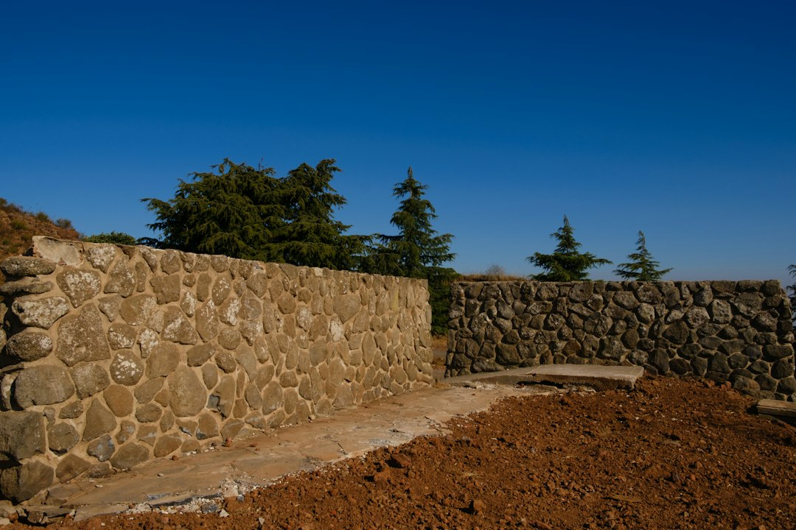

For homeowners comparing retaining walls perth options, the useful starting point is not style alone, but what the block, retained height, drainage need and approval pathway demand.
Retaining Walls Perth Explained
Retaining Wall Perth frames the first choice around Perth ground conditions and the job the wall has to do. Limestone block is described as a natural fit for sandy Swan Coastal Plain blocks and local streetscapes, while post and panel precast concrete is presented as a fast, consistent finish for driveways and boundaries.
That gives owners a clearer brief for a quote. Ask what the wall is retaining, whether there is surcharge from a driveway, building or fence, and whether the finished face needs to suit a visible front boundary or a service area. The right answer can change between a low garden terrace and a taller engineered wall.
- Limestone block: useful where the look of the wall matters and the site suits block construction.
- Post and panel: useful where a consistent precast finish and efficient installation are priorities.
- Besser block: noted for taller structural work and rendered finishes.
- Timber sleeper: described as a garden scale option for terraces and low boundary retaining.
Material Choices That Affect The Quote
Good retaining wall comparisons should separate supply, installation, drainage, access and engineering. A low, open garden wall can be a different scope from a boundary wall holding back fill near a driveway. The source page does not publish fixed prices, so any precise quote should come after the site details are reviewed.
Limestone, post and panel, timber sleeper, rock and boulder, and core filled besser block each ask different questions. For limestone, ask whether the blocks are natural or reconstituted and how the wall will be finished at corners and ends. For precast panel and post walls, ask about post type, panel finish and whether the wall is intended as a twin side boundary presentation.
Rock and boulder walls are described as battered back, rugged and free draining, especially for hills blocks and granite outcropped sites. That makes them a design conversation as much as a price conversation. The same brief should note machinery access, neighbouring property constraints and whether old wall removal is included.
Drainage And Repair Questions
The source page treats drainage as part of the structure, not an optional extra. It names ag drain, gravel and geofabric behind every wall, with the purpose of preventing failures in winter saturated sandy ground. A quote that leaves the drainage build up vague is hard to compare with one that describes it line by line.
Repairs need a diagnosis before a price. The page distinguishes a leaning timber sleeper section from a bulging block wall that may need partial demolition and rebuilding. Before asking for a number, document the wall material, visible cracking, movement, surface water paths and whether the wall is close to a fence, boundary or paved area.
- Ask what failure mode the contractor can see.
- Ask whether drainage, footing condition and material state have been checked.
- Ask whether repair is realistic or replacement is the more honest scope.
- Ask what will happen to fencing, paving or garden beds during the work.
Approval Checks Before Work Starts
The published guidance says a local government building permit is generally needed once a wall retains more than 0.5 metres of ground. It also says a wall of any height can need approval if it is tied to other building work, affects or protects adjoining land, or affects a boundary wall or dividing fence.
That means height is only one approval trigger. Tiered walls can also need careful checking, because the source page notes that some councils, including Wanneroo and Melville, count the combined height of tiered retaining toward the 0.5 metre figure. Owners should confirm the actual requirement with their local government before construction starts.
For engineered work, the page names AS 4678 and a WA registered building engineering practitioner. A practical brief should ask who is responsible for design drawings, engineering certification, permit documents and any inspections required by the approval pathway.
Who This Applies To
This guide is most useful for Perth owners who already know they need a wall or have a failing wall and want to compare quote scope. It fits residential retaining, visible boundary walls, driveway retaining, garden terracing and replacement of cracked, leaning or bulging sections.
It is also useful when comparing a short list of local builders, because the same questions can be asked of each tenderer. A companion retaining wall guide can help cross check the basic decision path before speaking with a contractor.
For larger or more complex projects, the main question is not just material preference. It is whether the wall carries extra load, sits on or near a boundary, needs engineering, or interacts with other building work. Those factors should be clarified before colours, face finish or garden detailing take over the conversation.
- Describe the site. Record the suburb or postcode, wall length, approximate retained height, access limits and whether an existing wall must be removed.
- Choose a likely material. Shortlist limestone, post and panel, besser block, timber, or rock and boulder based on use, visibility and structure.
- Check approval triggers. Confirm height, boundary impact, surcharge and any tiered wall issue with the local government before committing to work.
- Compare quote scope. Ask each contractor to spell out drainage, engineering, permit handling, demolition, spoil removal and reinstatement.
| Option | Best suited to | Questions to ask |
|---|---|---|
| Limestone block | Sandy blocks and visible streetscape areas named by the source page | Natural or reconstituted block, footing detail, drainage and finish |
| Post and panel precast concrete | Driveway and boundary retaining where a consistent finish is wanted | Post type, panel finish, access and whether both sides will be visible |
| Besser block | Taller engineered walls or rendered finishes | Engineering, reinforcement, core filling and permit responsibility |
| Timber sleeper | Garden scale terraces and low boundary retaining | Sleeper type, drainage, expected repair path and replacement access |
| Rock and boulder | Hills blocks and rugged free draining finishes | Batter, machine access, rock selection and boundary impacts |
This guide covers practical material, drainage, repair and approval questions for Perth retaining wall projects.